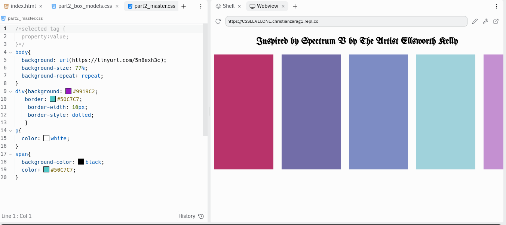
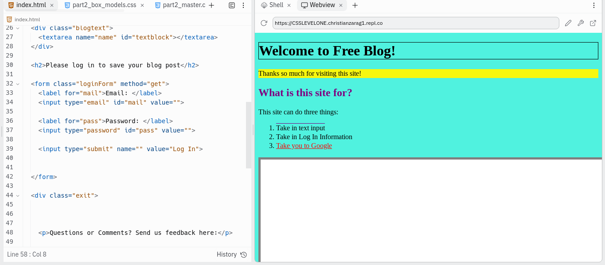

PORTFOLIO EVER
B I O
|  |
- CSS SPECTRUM V ASSESSMENT
- GOAL: To make 5 pannels in css with a specific distance and color.
- Process: In order to complete this assignment I had to play around with the properties of the table tag in css. I made 10 table rows however only five were filled in with color and the blank rows were used to create spacing using the padding tag in css.
- CLICK HERE for the project view
|
|  |
- CSS JOB ASSESSMENT
- Goal: To make a home web page based of how the customer asked for it to look.
- Process: The first step was to create the skeleton of the page via html. After that I followed instructions such as what color the background should be or were borders or highlights should be added.
- CLICK HERE for the project view
|